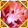
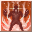
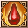

Loading...
Items
Weapons
Sword
Hammer
Axe
Two-Handed Sword
Two-Handed Hammer
Two-Handed Axe
Bow
Firearm
Relic
Staff
Shield
One-Handed Mecha Weapon
Two-Handed Mecha Weapon
Artillery
Arrows
Shells
Crystal
Katana
Armor
Head
Body
Legs
Hands
Feets
Back
Accesory
Backpack
Special Equipment
One-Handed Equipment
Two-Handed Equipment
Headgear
Back
Body
Talents Items
Talent Card
Talent Plane
Talent Fragment
Talent Skill
Power Stone
Sprite
Sprite
Jug Monster
Backpack
Sprite Island Formule
Sprite Island Breeding
Sprite Island Recipes
Sprite Island Buildings
Sprite Customes
Sprite Workbench
Sprite Emblem
Skill Book(Novice)
Skill Book(Intermediate)
Skill Book(Advanced)
Supplies
Mining
Foraging
Hunting
Crafting Ingredients
Piedras de Equipo
Gem Stone
Rune Stone
Resonance Stone
Nucleus
Mounts
Thrones
Comb Talents
Berserker
Paladin
Ranger
Assassin
Cleric
Sage
Wizard
Necromancer
Enginer
Demolitionist
Void Runner
Time Traveler
Quest
Titles
Skills
Berserker
Paladin
Ranger
Assassin
Cleric
Sage
Wizard
Necromancer
Enginer
Demolitionist
Void Runner
Time Traveler
Sprites
Portuguese
English
Spanish
Portuguese
French
Suggestions
Contact Us
Credits
Make Alchemy
F.A.Q
Time
00
:
00
:
00
Emissaries Timer
<Avatar do Emissário>Anunciador da Luxúria
Floresta Antiga (X:290, Y:370) Monday 20:35
<Emissário Lunático> Loucura da Luxúria
Vale dos Cavaleiros (X:510.53, Y:619.852) Monday 20:35
<Emissário Pesadelo> Ladona Voraz
Arena de Combate do território ilusório (X:134.088, Y:347.754) Monday 15:30
Emissário Antigo Justiça
Vale dos Espíritos (X:439.138, Y:559.115) Monday 20:30
<Emissário Ilusionista> Alpha Yen
Aldeia Aura Ilusória (X:639.151, Y:232.943) Monday 15:30
<Emissário Ilusionista> Iota Zhong
Passagem da Chama de Fogo Congelante (X:534.548, Y:578.733) Monday 20:30
Skills Berserker
Skills
Passive Skills
Name
Level
Effect
Onda Abrasadora 1
Skills
×
Onda Abrasadora 1
Onda Abrasadora 2
Onda Abrasadora 3
Onda Abrasadora 4
Super Sangue Fervendo 1
Super Sangue Fervendo 2
Coragem Máxima 1
Entusiasmo Extremo 2
6
Info
Ataque Quebra Céu 1
Skills
×
Ataque Quebra Céu 1
Ataque Quebra Céu 2
Ataque Quebra Céu 3
Ataque Quebra Céu 4
Ataque Quebra Céu 5
Ataque Quebra Céu 6
Super Ataque Skybreaker 1
Super Ataque Skybreaker 2
Ataque Destruidor do Céu 1
Ataque de Concussão 2
6
Info
Redemoinho de Vento Cortante 1
Skills
×
Redemoinho de Vento Cortante 1
Redemoinho de Vento Cortante 2
Redemoinho de Vento Cortante 3
Redemoinho de Vento Cortante 4
Redemoinho de Vento Cortante 5
Redemoinho de Vento Cortante 6
Corte Tempestade 1
Corte Tempestade 2
Tempestade Cortante 1
Tempestade Cortante 2
6
Info
Golpe Enfraquecedor 1
Skills
×
Golpe Enfraquecedor 1
Golpe Enfraquecedor 2
Golpe Enfraquecedor 3
Golpe Enfraquecedor 4
Golpe Enfraquecedor 5
Pancada Enfraquecedora 1
Pancada Enfraquecedora 2
Ataque de Concussão 1
Ataque de Concussão 2
8
Info
Ondulação Terrestre 1
Skills
×
Ondulação Terrestre 1
Ondulação Terrestre 2
Ondulação Terrestre 3
Ondulação Terrestre 4
Onda Destruidora 1
Onda Terrestre Destruidora 2
Rompedor da Terra 1
Rompedor da Terra 2
16
Info
Ataque de Escudo 1
Skills
×
Ataque de Escudo 1
Ataque de Escudo 2
Ataque de Escudo 3
Grande Golpe de Escudo 1
Ataque de Escudo Massivo 2
Choque do Grande Escudo 1
Poderoso Ataque de Escudo 2
16
Info
Wrathwind 1
Skills
×
Wrathwind 1
Wrathwind 2
Wrathwind 3
Wrathwind 4
31
Info
Sedento por Sangue 1
Skills
×
Sedento por Sangue 1
Sedento por Sangue 2
Sedento por Sangue 3
Sedento por Sangue 4
Sedento por Sangue 5
Sedento por Sangue 6
Sedento por Sangue 7
Sedento por Sangue 2
Loucura por Sangue 3
Lunático Sanguinário 1
Lunático Sanguinário 2
31
Info
Onda Poderosa 1
Skills
×
Onda Poderosa 1
Onda Poderosa 2
Onda Poderosa 3
Onda Poderosa 4
Onda Poderosa 5
Onda Poderosa 6
Onda Poderosa 7
Onda Poderosa 8
Onda Poderosa 9
Onda Poderosa Aperfeiçoada 1
Onda Poderosa Aperfeiçoada 2
Onda Poderosa Aperfeiçoada 3
Onda Dínamo 4
Onda Dínamo 4
Onda Poderosa Máxima 1
Onda Poderosa Máxima 2
Onda Poderosa Máxima 3
Onda Poderosa Máxima 4
31
Info
Grito de Guerra 1
Skills
×
Grito de Guerra 1
Grito de Guerra 2
Grito de Guerra 3
Grito de Guerra 4
Grito de Guerra 5
Grito de Guerra 1
Grito de Guerra 2
Grande Grito de Guerra 1
Grande Grito de Guerra 2
31
Info
Golpe de Furacão Selvagem 1
Skills
×
Golpe de Furacão Selvagem 1
Golpe de Furacão Selvagem2
Golpe de Furacão Selvagem 3
Golpe de Furacão Selvagem 4
Golpe de Furacão Selvagem 5
Golpe de Furacão Selvagem 6
Golpe de Furacão Selvagem 7
Golpe de Furacão Selvagem 8
Golpe de Furacão Selvagem 9
Corte de Furacão 1
Corte de Furacão 2
Corte de Furacão 3
Corte de Furacão 4
Corte de Furacão 5
Super Corte do Tornado 1
Super Corte do Tornado 2
Super Corte do Tornado 3
Super Corte do Tornado 4
31
Info
Ataque do Touro 1
Skills
×
Ataque do Touro 1
Ataque do Touro 2
Ataque do Touro 3
Charge 4
Ataque do Touro 5
Ataque do Touro 6
Ataque Reforçado 1
Ataque Reforçado 2
32
Info
Abalo Terrestre 1
Skills
×
Abalo Terrestre 1
Abalo Terrestre 2
Abalo Terrestre 3
Abalo Terrestre 4
Abalo Terrestre 5
Abalo Terrestre 6
Abalo Terrestre 7
Abalo Terrestre 8
Abalo Terrestre 9
Abalo Terrestre 1
Abalo Terrestre 2
Abalo Terrestre 3
Abalo Terrestre 4
Impacto no Centro da Terra 5
Ataque Central 1
Ataque Central 2
Ataque Central 3
Ataque Central 4
32
Info
Urro de Guerra Terrível 1
Skills
×
Urro de Guerra Terrível 1
Urro de Guerra Terrível 2
Urro de Guerra Terrível 3
Urro de Guerra Terrível 4
Urro de Guerra Terrível 5
Choro da Alma 1
Choro da Alma 2
Choro da Alma 3
Grito Selvagem da Alma 1
Grito Selvagem da Alma 2
Grito Selvagem da Alma 3
32
Info
Onda Pulso Terrestre 1
Skills
×
Onda Pulso Terrestre 1
Onda Pulso Terrestre 2
Onda Pulso Terrestre 3
Onda Pulso Terrestre 4
Onda Pulso Terrestre 5
Onda Pulso Terrestre 6
Onda Pulso Terrestre 7
Onda Pulso Terrestre 1

Onda de Choque do Demônio Guerreiro 1
Onda de Choque do Demônio Guerreiro 2
Onda de Choque do Demônio Guerreiro 3
Onda de Choque do Demônio Guerreiro 4
Onda de Choque do Demônio Guerreiro 4
Onda de Choque Demoníaca 1
Onda de Choque Demoníaca 2
Onda de Choque Demoníaca 3
Onda de Choque Demoníaca 4
34
Info
Golpe Esmagador 1
Skills
×
Golpe Esmagador 1
Golpe Esmagador 2
Golpe Esmagador 3
Golpe Esmagador 4
Golpe Esmagador 5
Golpe Esmagador 6
Golpe Esmagador 7
Golpe Esmagador 8
Golpe Esmagador 1
Golpe Esmagador 2
Golpe Esmagador 3
Golpe Esmagador 4
Golpe Destruidor 5
Golpe de Pulverizar 1
Golpe de Pulverizar 2
Golpe de Pulverizar 3
Golpe de Pulverizar 4
36
Info
Ferida Abismal 1
Skills
×
Ferida Abismal 1
Ferida Abismal 2
Ferida Abismal 3
Ferida Abismal 4
Ferida Abismal 5
Corte Espacial 1
Corte Espacial 2
Navalha de Ar 3
Corte Super Espacial 1
Corte Super Espacial 2
Corte Super Espacial 3
40
Info
Dança Caótica 1
Skills
×
Dança Caótica 1
Dança Caótica 2
Dança Caótica 3
Dança Caótica 4
Dança Caótica 5
Dança Caótica 1
Dança Caótica 2
Dança do Lunático 1
Dança do Lunático 2
40
Info
Fúria da Batalha 1
Skills
×
Fúria da Batalha 1
Fúria da Batalha 2
Fúria da Batalha 3
Disposição para Matar 1
Disposição para Matar 2
Canção da Matança 3
Vontade Cruel 3
Vontade Cruel 1
Vontade Cruel 2
40
Info
Recuperação 1
Skills
×
Recuperação 1
Recuperação 2
Recuperação 3
Recuperação 4
Recuperação 5
Recuperação 6
Recuperação 7
Recuperação 8
Recuperação 9
Recuperação Campeã 1
Recuperação Campeã 2
61
Info
Explosão de Vigor 1
Skills
×
Explosão de Vigor 1
Explosão de Vigor 2
Explosão de Vigor 3
Explosão de Vigor 4
Explosão de Vigor 5
61
Info
Intenção Assassina 1
Skills
×
Intenção Assassina 1
Intenção Assassina 2
Intenção Assassina 3
Intenção Assassina 4
Intenção Assassina 5
Intenção Assassina 6
Intenção Assassina 7
66
Info
Corte Saltado 1
Skills
×
Corte Saltado 1
Corte Saltado 2
Corte Saltado 3
Corte Saltado 4
Corte Saltado 5
Corte Saltado 6
Corte Saltado 7
66
Info
Liberação Potencial
Skills
×
Liberação Potencial
66
Info
Escapou sem deixar rastros
Skills
×
Escapou sem deixar rastros
66
Info
Ataque Sobrenatural
Skills
×
Ataque Sobrenatural
66
Info
Zelo 1
Skills
×
Zelo 1
Zelo 2
Zelo 3
Zelo 4
Zelo 5
Zelo 6
67
Info
Desafio 1
Skills
×
Desafio 1
Desafio 2
Desafio 3
Desafio 4
Desafio 5
68
Info
Ataque Sangrento 1
Skills
×
Ataque Sangrento 1
Ataque Sangrento 2
Ataque Sangrento 3
Ataque Sangrento 4
Ataque Sangrento 5
Ataque Sangrento 6
Ataque Sangrento 7
Ataque Sangrento 8
69
Info
Destruição Esmagadora
Skills
×
Destruição Esmagadora
84
Info
Violência Sangrenta Final 1
Skills
×
Violência Sangrenta Final 1
Violência Sangrenta Final 2
Violência Sangrenta Final 3
Violência Sangrenta Final 4
86
Info

Crueldade 1
Skills
×
Crueldade 1
Crueldade 2
86
Info
Indômito 1
Skills
×
Indômito 1
Indômito 2
Indômito 3
Indômito 4
Indômito 5
87
Info
Alta Batalha Espiritual
Skills
×
Alta Batalha Espiritual
91
Info
Alta Batalha Espiritual II
Skills
×
Alta Batalha Espiritual II
91
Info
Renovação de Sangue
Skills
×
Renovação de Sangue
91
Info
Fúria Titã
Skills
×
Fúria Titã
91
Info

Cicatriz de guerra
Skills
×
Cicatriz de guerra
91
Info
Name
Level
Effect
Alma Arrebentada a
Skills
×
Alma Arrebentada a
Alma Arrebentada ß
Alma Arrebentada ß
Alma Arrebentada d
6
Info
Mortal Dash 1
Skills
×
Mortal Dash 1
Mortal Dash 2
Mortal Dash 3
Mortal Dash 3
Mortal Dash 4
Mortal Dash 4
Mortal Dash 5
Mortal Dash 5
Mortal Dash 6
Mortal Dash 6
6
Info
Emoção Intensa Melhorada 1
Skills
×
Emoção Intensa Melhorada 1
Emoção Intensa Melhorada 2
Emoção Intensa Melhorada 3
Emoção Intensa Melhorada 4
Emoção Intensa Melhorada 5
6
Info
Perito em Defesa
Skills
×
Perito em Defesa
6
Info
Golpe Enfraquecedor Melhorado 1
Skills
×
Golpe Enfraquecedor Melhorado 1
Golpe Enfraquecedor Melhorado 2
Golpe Enfraquecedor Melhorado 3
Golpe Enfraquecedor Melhorado 4
Golpe Enfraquecedor Melhorado 5
8
Info
Escudo de Ataque Melhorado 1
Skills
×
Escudo de Ataque Melhorado 1
Escudo de Ataque Aperfeiçoado 2
Escudo de Ataque Aperfeiçoado 3
Escudo de Ataque Aperfeiçoado 4
Escudo de Ataque Aperfeiçoado 5
16
Info
Perseverância na Batalha
Skills
×
Perseverância na Batalha
16
Info
Onda Poderosa Melhorada 1
Skills
×
Onda Poderosa Melhorada 1
Onda Poderosa Melhorada 2
Onda Poderosa Melhorada 3
Onda Poderosa Melhorada 4
Onda Poderosa Melhorada 5
31
Info
Golpe de Vento Aperfeiçoado 1
Skills
×
Golpe de Vento Aperfeiçoado 1
Golpe de Vento Aperfeiçoado 2
Golpe de Vento Aperfeiçoado 3
Golpe de Vento Aperfeiçoado 4
Golpe de Vento Aperfeiçoado 5
31
Info
Sedento por Sangue Aperfeiçoado 1
Skills
×
Sedento por Sangue Aperfeiçoado 1
Sedento por Sangue Aperfeiçoado 2
Sedento por Sangue Aperfeiçoado 3
Sedento por Sangue Aperfeiçoado 4
Sedento por Sangue Aperfeiçoado 5
31
Info
Abalo Terrestre Aperfeiçoado 1
Skills
×
Abalo Terrestre Aperfeiçoado 1
Abalo Terrestre Aperfeiçoado 2
Abalo Terrestre Aperfeiçoado 3
Abalo Terrestre Aperfeiçoado 4
Abalo Terrestre Aperfeiçoado 5
32
Info
Golpe Esmagador Aperfeiçoado 1
Skills
×
Golpe Esmagador Aperfeiçoado 1
Golpe Esmagador Aperfeiçoado 2
Golpe Esmagador Aperfeiçoado 3
Golpe Esmagador Aperfeiçoado 4
Golpe Esmagador Aperfeiçoado 5
36
Info
Fenda Abismal Melhorada 1
Skills
×
Fenda Abismal Melhorada 1
Fenda Abismal Melhorada 2
Fenda Abismal Melhorada 3
Fenda Abismal Melhorada 4
Fenda Abismal Melhorada 5
40
Info
Dança Caótica Melhorada 1
Skills
×
Dança Caótica Melhorada 1
Dança Caótica Melhorada 2
Dança Caótica Melhorada 3
Dança Caótica Melhorada 4
Dança Caótica Melhorada 5
40
Info
Persistência 1
Skills
×
Persistência 1
Persistência 2
Persistência 3
Persistência 4
Persistência 5
Persistência 6
66
Info
Superonda Poderosa Melhorada 1
Skills
×
Superonda Poderosa Melhorada 1
Superonda Poderosa Melhorada 2
Superonda Poderosa Melhorada 3
Superonda Poderosa Melhorada 4
Superonda Poderosa Melhorada 5
66
Info
Possessão do Deus do Fogo 1
Skills
×
Possessão do Deus do Fogo 1
Possessão do Deus do Fogo 2
Possessão do Deus do Fogo 3
66
Info
Força de Exorcismo 1
Skills
×
Força de Exorcismo 1
Força de Exorcismo 2
Força de Exorcismo 3
66
Info
Golpe de Tornado Aperfeiçoado 1
Skills
×
Golpe de Tornado Aperfeiçoado 1
Golpe de Tornado Aperfeiçoado 2
Golpe de Tornado Aperfeiçoado 3
Golpe de Tornado Aperfeiçoado 4
Golpe de Tornado Aperfeiçoado 5
66
Info
Sedento por Sangue Aperfeiçoado 1
Skills
×
Sedento por Sangue Aperfeiçoado 1
Sedento por Sangue Aperfeiçoado 2
Sedento por Sangue Aperfeiçoado 3
Sedento por Sangue Aperfeiçoado 4
Sedento por Sangue Aperfeiçoado 5
66
Info
Impacto no Núcleo Terrestre Aperfeiçoado 1
Skills
×
Impacto no Núcleo Terrestre Aperfeiçoado 1
Impacto no Núcleo Terrestre Aperfeiçoado 2
Impacto no Núcleo Terrestre Aperfeiçoado 3
Impacto no Núcleo Terrestre Aperfeiçoado 4
Impacto no Núcleo Terrestre Aperfeiçoado 5
68
Info
Golpe Estilhaçador Aperfeiçoado 1
Skills
×
Golpe Estilhaçador Aperfeiçoado 1
Golpe Estilhaçador Aperfeiçoado 2
Golpe Estilhaçador Aperfeiçoado 3
Golpe Estilhaçador Aperfeiçoado 4
Golpe Estilhaçador Aperfeiçoado 5
68
Info
Emoção Intensa Super Melhorada 1
Skills
×
Emoção Intensa Super Melhorada 1
Emoção Intensa Super Melhorada 2
Emoção Intensa Super Melhorada 3
Emoção Intensa Super Melhorada 4
Emoção Intensa Super Melhorada 5
68
Info
Pancada Enfraquecedora Melhorada 1
Skills
×
Pancada Enfraquecedora Melhorada 1
Pancada Enfraquecedora Melhorada 2
Pancada Enfraquecedora Melhorada 3
Pancada Enfraquecedora Melhorada 4
Pancada Enfraquecedora Melhorada 5
68
Info
Corte Espacial Aperfeiçoado 1
Skills
×
Corte Espacial Aperfeiçoado 1
Corte Espacial Aperfeiçoado 2
Corte Espacial Aperfeiçoado 3
Corte Espacial Aperfeiçoado 4
Corte Espacial Aperfeiçoado 5
70
Info
Escudo Pesado de Ataque Aperfeiçoado 1
Skills
×
Escudo Pesado de Ataque Aperfeiçoado 1
Escudo Pesado de Ataque Aperfeiçoado 2
Escudo Pesado de Ataque Aperfeiçoado 3
Escudo Pesado de Ataque Aperfeiçoado 4
Escudo Pesado de Ataque Aperfeiçoado 5
70
Info
Dança Frenética Melhorada 1
Skills
×
Dança Frenética Melhorada 1
Dança Frenética Melhorada 2
Dança Frenética Melhorada 3
Dança Frenética Melhorada 4
Dança Frenética Melhorada 5
70
Info
Armadura de Perfuração 1
Skills
×
Armadura de Perfuração 1
Armadura de Perfuração 2
86
Info
Alma Invencível 1
Skills
×
Alma Invencível 1
Alma Invencível 2
Alma Invencível 3
Alma Invencível 4
Alma Invencível 5
86
Info
Contra-ataque Rápido 1
Skills
×
Contra-ataque Rápido 1
91
Info
Credits
×
Developers:
Kougami
EX GS Angelique
Collaborators:
EX GS Roshi
EX GS Marchel
Contact Us
×
Contact emails
admin@grandfantasia-db.com